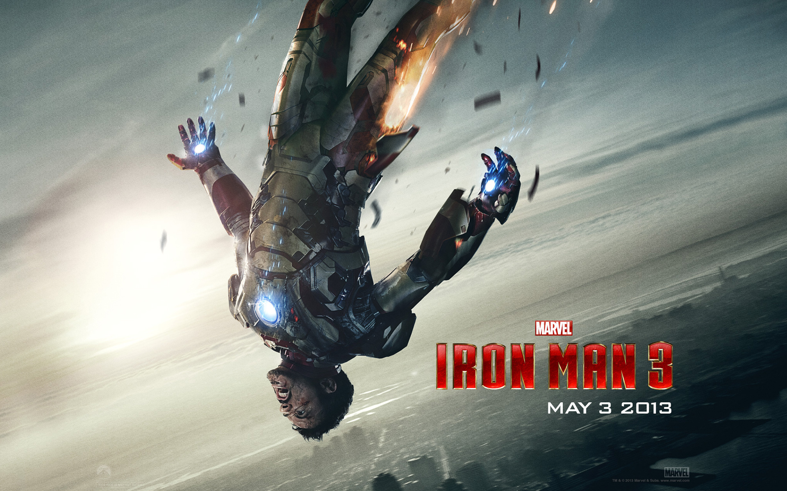
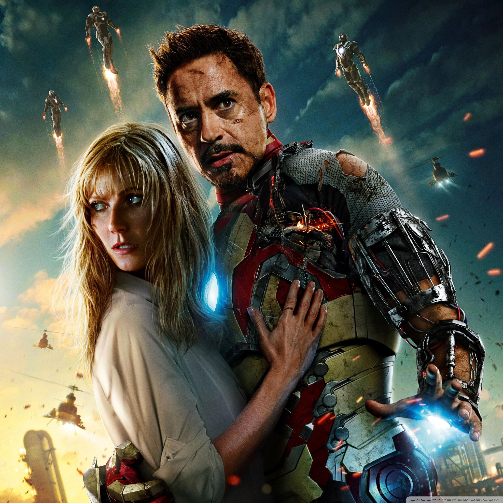
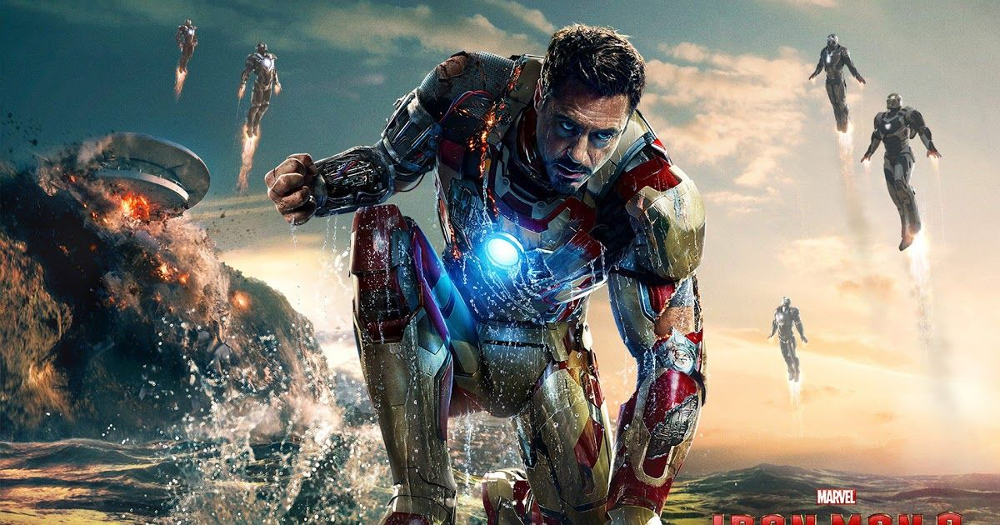

Iron Man 3 is a 2013 American superhero film based on the Marvel Comics character Iron Man, produced by Marvel Studios and distributed by Walt Disney Studios Motion Pictures.It is the sequel to Iron Man (2008) and Iron Man 2 (2010), and the seventh film in the Marvel Cinematic Universe (MCU). The film was directed by Shane Black from a screenplay he co-wrote with Drew Pearce, and stars Robert Downey Jr. as Tony Stark / Iron Man alongside Gwyneth Paltrow, Don Cheadle, Guy Pearce, Rebecca Hall, Stéphanie Szostak, James Badge Dale, Jon Favreau, and Ben Kingsley. In Iron Man 3, Tony Stark wrestles with the ramifications of the events of The Avengers during a national terrorism campaign on the United States led by the mysterious Mandarin.
  